Password Agent Installation Guide
The Check ID password agent module is a simple module made for listening to change password requests from CheckID, executing the password change in the local Active Directory (AD) and reporting back the status of the password change. There are a few steps required to install the module and run it:
Requirements
- The agent must be running on a domain joined windows server
- PowerShell 7.5 or newer installed
- AD PowerShell installed, with all features:
Install-WindowsFeature -Name RSAT-AD-Tools -IncludeAllSubFeature
Step 1: Install required PowerShell modules
Open a PowerShell 7 window (pwsh.exe) as administrator and install the required modules from PowerShell Gallery:
Install-Module EntraIDAccessToken -Scope AllUsers
Install-Module Fortytwo.CheckID.PasswordAgent -Scope AllUsers
Note!
You may be prompted to confirm the installation from 'PSGallery'.
Enter 'A' to allow current, and all future, modules from PSGallery to be installed, without prompting
Enter 'Y' to allow installation of only current module
Untrusted repository
You are installing the modules from an untrusted repository.
If you trust this repository, change its InstallationPolicy value by running the Set-PSRepository cmdlet..
Are you sure you want to install the modules from 'PSGallery'?
[Y] Yes [A] Yes to All [N] No [L] No to All [S] Suspend [?] Help (default is "N"):
Note!
If modules cannot be installed from PowerShell Gallery they must be downloaded manually into the checkid folder (created in Step 2).
Files downloaded from the internet can be tagged with script execution block, for security reasons. To remove this protection, and make sure all files in the checkid folder can be processed, run the following:
Get-ChildItem -Recurse c:\checkid | Unblock-File -WhatIfIf it looks OK, run again without -WhatIf:
Get-ChildItem -Recurse c:\checkid | Unblock-File -Verbose
Step 2: Configure CheckIDPasswordAgent requirements
- Run the following (also as administrator):
# Create checkid directory and go into the new folder
mkdir c:\checkid ; cd c:\checkid
# Create new Windows event log source "CheckIDPasswordAgent" visible in Application event log
New-EventLog -LogName "Application" -Source "CheckIDPasswordAgent"
# Creates and saves a self-signed certificate named "CheckIDAgent" used for authenticating with password reset API
$Certificate = New-SelfSignedCertificate -Subject "CheckIDAgent" -NotAfter (Get-Date).AddYears(100)
[System.Convert]::ToBase64String($Certificate.Export([System.Security.Cryptography.X509Certificates.X509ContentType]::Cert), "InsertLineBreaks") | Set-Content -Path "CheckIDAgent-$($env:COMPUTERNAME).cer"
# Output thumbprint, certificate file name and agent id, required to configure the CheckID password agent run script
"","Thumbprint: $($Certificate.ThumbPrint)", "Certificate file: CheckIDAgent-$($env:COMPUTERNAME).cer","Agent id: $(New-Guid)","" | Write-Host
PowerShell will generate output (example below). Copy it and save it as you'll be needing this later on to configure and run the CheckID Agent.
Thumbprint: 905A03B4EBF6B25E7986B6E0C20172F74988C373
Certificate file: CheckIDAgent-<SERVERNAME>.cer
Agent id: a628f707-6c25-596e-8424-4249fa0e14b9
Step 3: Consent to Fortytwo Universe (our API) and create an Entra app registration for the password reset agent
-
As a global administrator, admin consent the Fortytwo Universe API: https://login.microsoftonline.com/common/adminconsent?client_id=2808f963-7bba-4e66-9eee-82d0b178f408
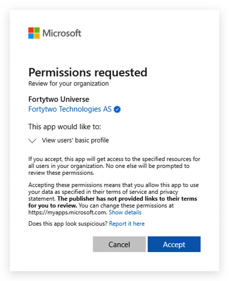Note!
After successfully granting admin consent you may get an error page. This simply means that there is no redirect URI configured on the app registration. The admin consent process is complete.
To verify that the admin consent was successful, look in Enterprise applications: 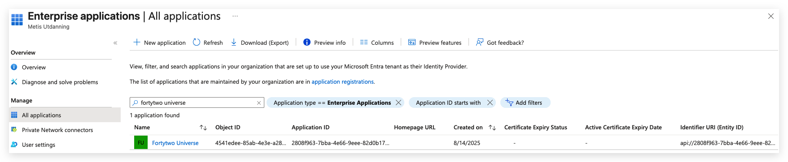
-
As a Cloud Application Administrator (or more privileged admin), in Entra ID, go to App registrations and select New registration
-
Give it a name (e.g. CheckIDAgent) and select Register
-
Copy and save the Client ID and Tenant ID 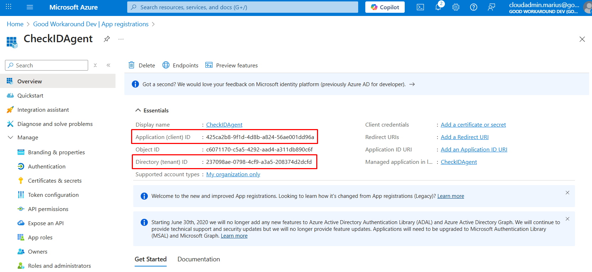
-
Under Certificates & secrets, upload the certificate file created in Step 2

-
Under API permissions, click Add a permission, select APIs my organization uses and locate Fortytwo Universe 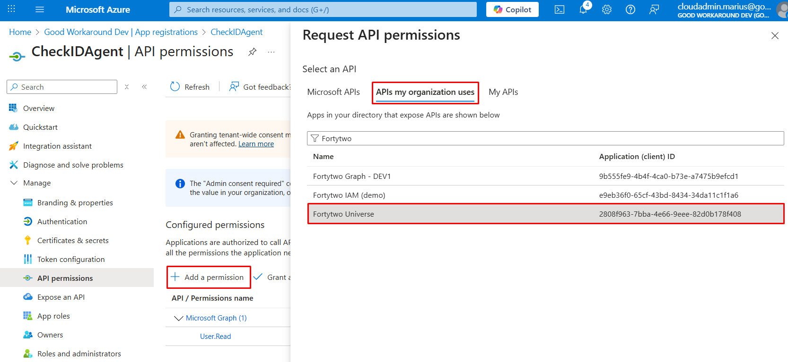
-
Under Application permissions, check checkid_agent.all and click Add permissions

-
Select Grant admin consent 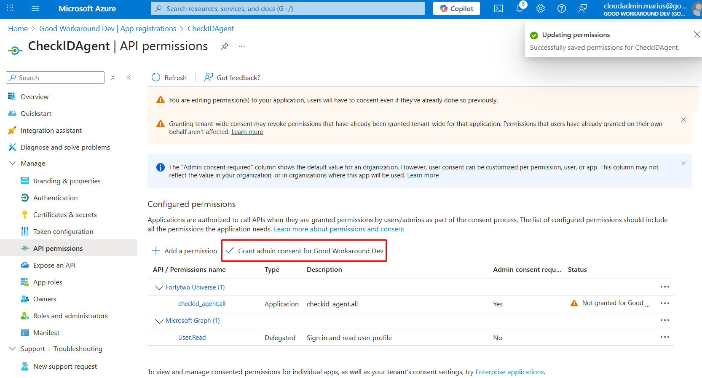
Step 4: Create a run file to test the CheckID Agent configuration
Create a new PowerShell file C:\checkid\run.ps1.
Replace placeholder values (for thumbprint, clientid, tenantid) with output from Step 2 - Configure CheckIDPasswordAgent requirements:
# Install and auto update the PasswordAgent module
Install-Module Fortytwo.CheckID.PasswordAgent -Confirm:$false -Force -Verbose -Scope CurrentUser
Import-Module Fortytwo.CheckID.PasswordAgent -Force
Add-EntraIDClientCertificateAccessTokenProfile `
-Resource "2808f963-7bba-4e66-9eee-82d0b178f408" `
-Thumbprint "THUMBPRINT_FROM_STEP2" `
-ClientId "CLIENT_ID_FROM_STEP3" `
-TenantId "TENANT_ID_FROM_STEP3"
Connect-CheckIDPasswordAgent `
-AgentID "AGENTID_FROM_STEP2" `
-Verbose
Start-CheckIDPasswordAgentListener -Sleep 2 -Verbose -Debug
Step 5: Test the CheckID Agent manually
-
Open a PowerShell 7 window (pwsh.exe) as administrator
-
Run:
cd c:\checkid ; . c:\checkid\run.ps1At this point, you can test out CheckID and see that a password change is received by the agent.
Note!
The reset password operation will only be successful if your user holds sufficient Active Directory privileges
If you get stopped by strict execution policy see PowerShell execution policy.
If the agent starts successfully it will create output similar like this:
VERBOSE: Generating RSA key pair for encryption VERBOSE: Registering CheckIDPasswordAgent with AgentID a628f707-6c25-596e-8424-4249fa0e14b9 and TenantID b1fa17-9118-43ed-107e-1be368b7d2b0 to api.fortytwo.io VERBOSE: Requested HTTP/1.1 POST with 603-byte payload VERBOSE: Received HTTP/1.1 response of content type application/json of unknown size VERBOSE: CheckIDPasswordAgent registered successfully: {"agentId":"a628f707-6c25-596e-8424-4249fa0e14b9"} VERBOSE: Starting CheckIDPasswordAgent listener with a sleep interval of 2 seconds VERBOSE: Requested HTTP/1.1 GET with 0-byte payload VERBOSE: Received HTTP/1.1 response of content type application/json of unknown size VERBOSE: Content encoding: utf-8 VERBOSE: No requests found for agent a628f707-6c25-596e-8424-4249fa0e14b9 VERBOSE: No requests found, sleeping for 2 seconds VERBOSE: Requested HTTP/1.1 GET with 0-byte payload VERBOSE: Received HTTP/1.1 response of content type application/json of unknown size VERBOSE: Content encoding: utf-8 VERBOSE: No requests found for agent a628f707-6c25-596e-8424-4249fa0e14b9 VERBOSE: No requests found, sleeping for 2 seconds -
Open Event Viewer, expand Windows Logs and look into Application event log. There should now be logs with source CheckIDPasswordAgent.

PowerShell Execution Policy
If script execution is stopped you can temporarily (or permanently) modify the current execution policy:
Get-ExecutionPolicy -List
$originalExecutionPolicy = Get-ExecutionPolicy -Scope CurrentUser
Set-ExecutionPolicy -ExecutionPolicy RemoteSigned -Scope CurrentUser -Force
When you have verified that the CheckID Agent can run successfully, set execution policy back to it's original setting:
Set-ExecutionPolicy -ExecutionPolicy $originalExecutionPolicy -Scope CurrentUser -Force
Step 6: Create and run the CheckID Agent as a scheduled task
-
As a user with domain admin privileges, create a gMSA (group managed service account) for the scheduled task to run as:
# Remember to include a trailing '$', after computername, if configuring a different (or additional) server principal(s) to retrieve the gMSA password New-ADServiceAccount -Name "checkidagent" -PrincipalsAllowedToRetrieveManagedPassword "$($env:COMPUTERNAME)$" -DNSHostname "checkid.no" # Verify that the computer can use the group managed service account Test-ADServiceAccount -Identity checkidagent -VerboseNote!
If the Test-ADServiceAccount is successful it will return True
Test-ADServiceAccount -Identity checkidagent -Verbose
VERBOSE: Performing the operation "Test" on target "CN=checkidagent,CN=Managed Service Accounts,DC=fabrikam,DC=com".
TrueIf the test fails, download script Test-gMSAencryptionSettings.ps1, from Fortytwo public GitHub repository, for help with troubleshooting.
-
Assign the gMSA the reset password permission on an organizational unit (OUs) in Active Directory
The PowerShell way
- Download Delegate-PasswordReset.ps1, from Fortytwo public GitHub repository.
- Run script as a user with domain admin privileges. Provide group managed service account name and distinguished name of where to apply the reset password privilege:
Delegate-PasswordReset.ps1 -AccountSam "checkidagent$" -DistinguishedName "OU=users,OU=organization,DC=fabrikam,DC=com"
Removing the delegated permission can easily be performed in Active Directory Users and Computers:
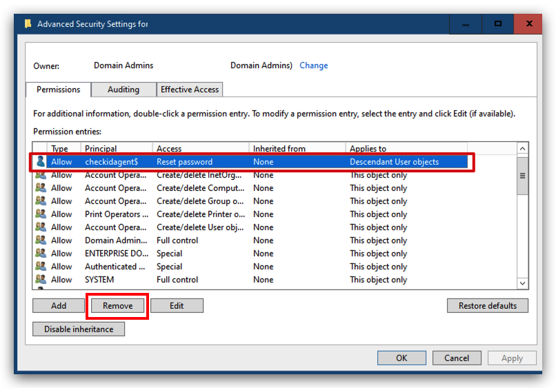
Using AD tool dsacls (see requirements - AD PowerShell RSAT tools)
-
Run as a user with domain admin privileges (adjust the OU path and domain name):
Note!
If running dsacls in a PowerShell 7 shell make sure there are single apostrophes enclosing the final argument.
# Add Reset Password permission dsacls "OU=Users,OU=Organization,DC=FABRIKAM,DC=COM" /I:S /G 'fabrikam.com\checkidagent$:CA;Reset Password;user' dsacls "OU=Users,OU=Organization,DC=FABRIKAM,DC=COM" /I:S /G 'fabrikam.com\checkidagent$:rpwp;PwdlastSet;user' dsacls "OU=Users,OU=Organization,DC=FABRIKAM,DC=COM" /I:S /G 'fabrikam.com\checkidagent$:rpwp;lockoutTime;user' # Verify Reset Password permission # Because the gMSA is special account (classified as a machine account) it's sAMAccountName will have a trailing '$', visible from the output dsacls "OU=Users,OU=Organization,DC=FABRIKAM,DC=COM" | Select-String -SimpleMatch "checkid" Allow FABRIKAM\checkidagent$ Reset Password Allow FABRIKAM\checkidagent$ SPECIAL ACCESS for pwdLastSet Allow FABRIKAM\checkidagent$ SPECIAL ACCESS for lockoutTime# Remove permissions assigned to (group managed service) account dsacls "OU=Users,OU=Organization,DC=FABRIKAM,DC=COM" /R 'FABRIKAM\checkidagent$' # Verify that Reset Password permissions have been removed dsacls "OU=Users,OU=Organization,DC=FABRIKAM,DC=COM" | Select-String -SimpleMatch "checkid"Note!
ONLY when run in with PowerShell 7 the output of Select-String will look like this:
Allow FABRIKAM\←[7mcheckid←[0magent$
Add -NoEmphasis and it will look as expected, as when run with PowerShell 5:
Allow FABRIKAM\checkidagent$ Reset Password
"By default, PowerShell 7 highlights the matched string. To turn this off, the -NoEmphasis parameter must be specified. Prior versions don't have the built-in capabilities to highlight matched strings."
-
Assign permissions to access the CheckIDAgent certificate private key
-
As administrator, open
certlm.msc(shortcut for "Manage computer certificates" in Control panel) -
Right-click certificate CheckIDAgent
-
Select Manage Private Keys
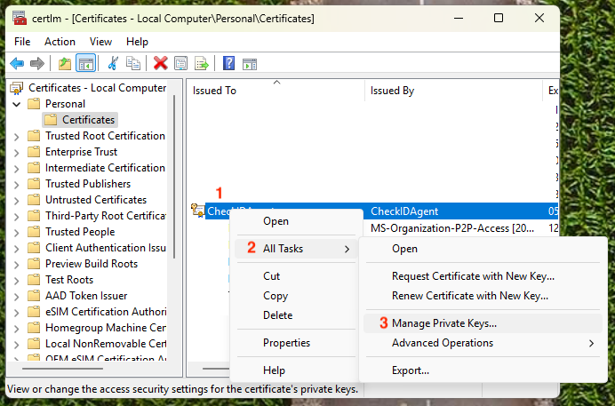 -
When adding a group managed service account make sure to select "Service accounts" 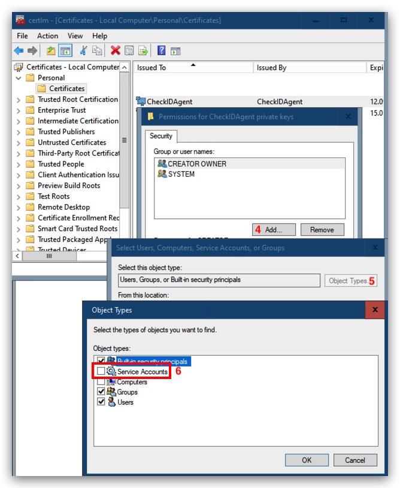
-
Allow any account that will be running the CheckID Agent Read permission to the certificate's private key 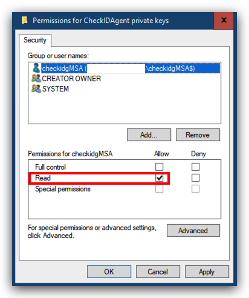
-
-
For gMSA to run a scheduled task, add the "User Rights Assignment" Log on as a batch job
Using Local Security Policy in Administrative Tools
-
As administrator, open
secpol.msc(shortcut for "Local Security Policy") 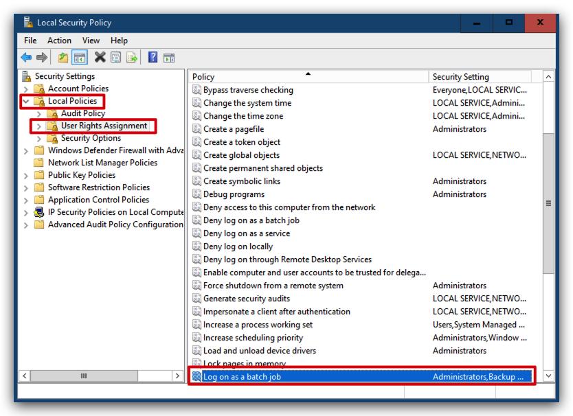Tip!
Use gpupdate if change isn't effective immediately (if scheduled task won't start):
gpupdate /target:computer /force
The PowerShell way
-
-
Download Add-LogonAsABatchJobRight.ps1 from Fortytwo public GitHub repository and save it in c:\checkid
-
Run
Add-LogonAsABatchJobRight -AccountSam checkidgMSA$ -
To remove the permission, run
Add-LogonAsABatchJobRight -AccountSam checkidgMSA$ -Remove -
RECOMMENDED
To run a scheduled task using a gMSA the scheduled task must be created programmatically -
Download Register-ScheduledTasks.ps1 from Fortytwo public GitHub repository and save it in c:\checkid
-
Download StartStop-CheckIDAgentListener.ps1 from Fortytwo public GitHub repository and save it in c:\checkid
-
Configure StartStop-CheckIDAgentListener.ps1 with configuration from run.ps1, which was verified in Step 5 - Test the Checkid Agent manually
Use a text editor, open c:\checkid\run.ps1, copy and replace the Add-EntraClientCertificateAccessTokenprofile and Connect-CheckIDPasswordAgent settings placeholder settings in StartStop-CheckIDAgentListener.ps1 (shown below):Add-EntraIDClientCertificateAccessTokenProfile ` -Resource "2808f963-7bba-4e66-9eee-82d0b178f408" ` -Thumbprint "<actual thumbprint>" ` -ClientId "<app registration app id>" ` -TenantId "<Entra tenant id>" Connect-CheckIDPasswordAgent ` -AgentID "<actual agent id>" ` -Verbose- Create CheckID Password Agent scheduled task (default gMSA name: checkidadgent$, default script path c:\checkid\StartStop-CheckIDAgentListener.ps1)
As administrator, open a PowerShell 7 window and run:
c:\checkid\Register-ScheduledTasks.ps1
To address a different gMSA and run script name / path use:c:\checkid\Register-ScheduledTasks.ps1 -script c:\checkid\run.ps1 -gMSA checkidgMSA$(remember a trailing $ when using a gMSA)Tip!
The scheduled task runs the script with parameter -ExecutionPolicy Bypass to avoid PowerShell execution policy settings.
For interactive script execution, you may need to see PowerShell execution policy to alter effective policy. -
OPTIONAL
Create a scheduled task and run it using a (non-managed group) service account -
Runs every 2 minutes (so it will restart the task if it fails) 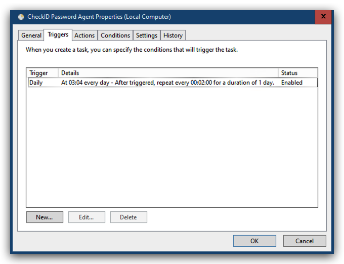
-
Runs the action
pwsh -executionPolicy bypass -file c:\checkid\run.ps1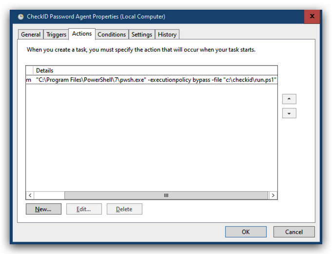 -
Do not run multiple instances
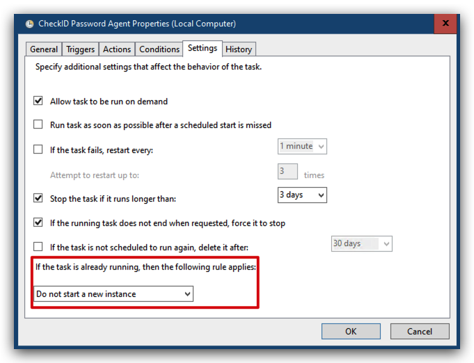 -
Configure scheduled task to "Run whether user is logged on or not" 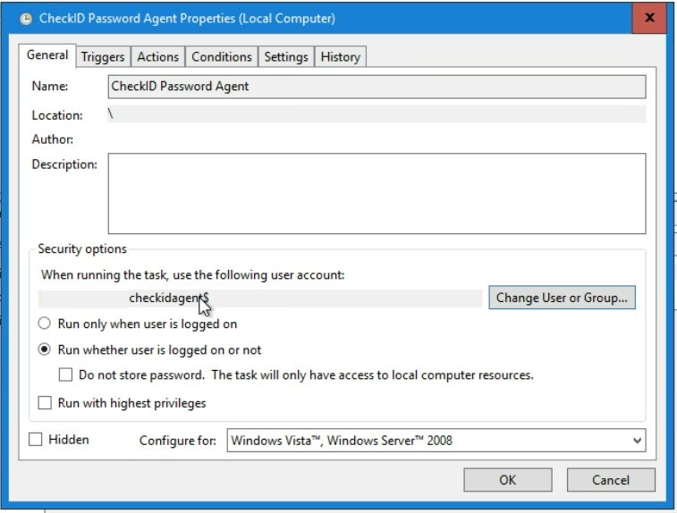